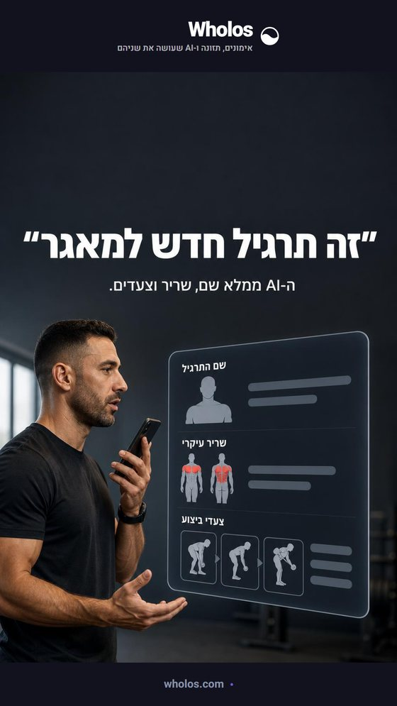
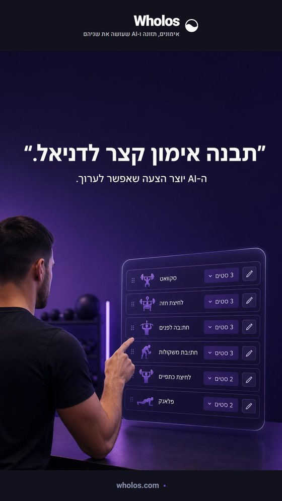
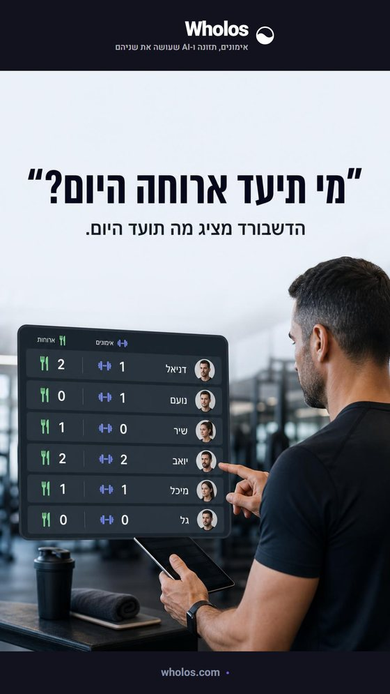
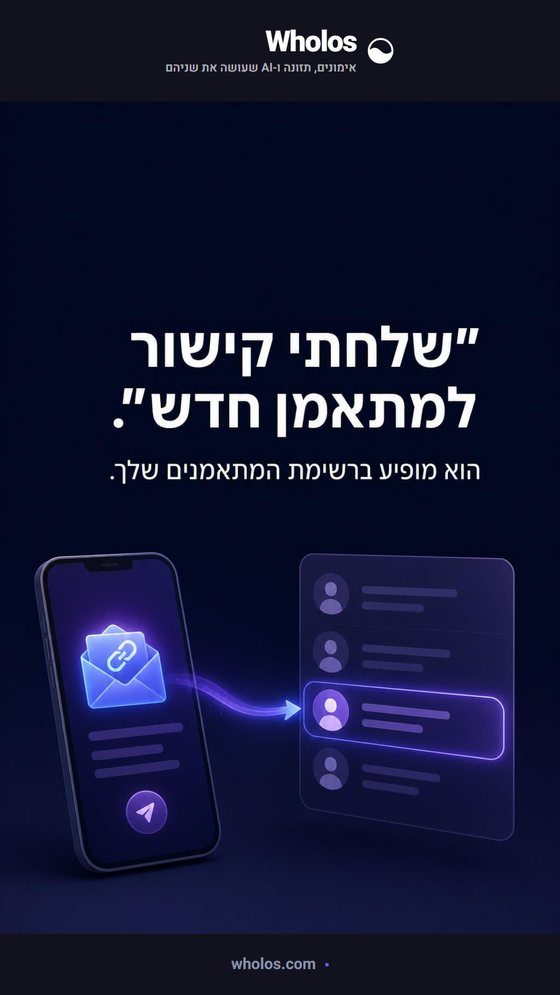
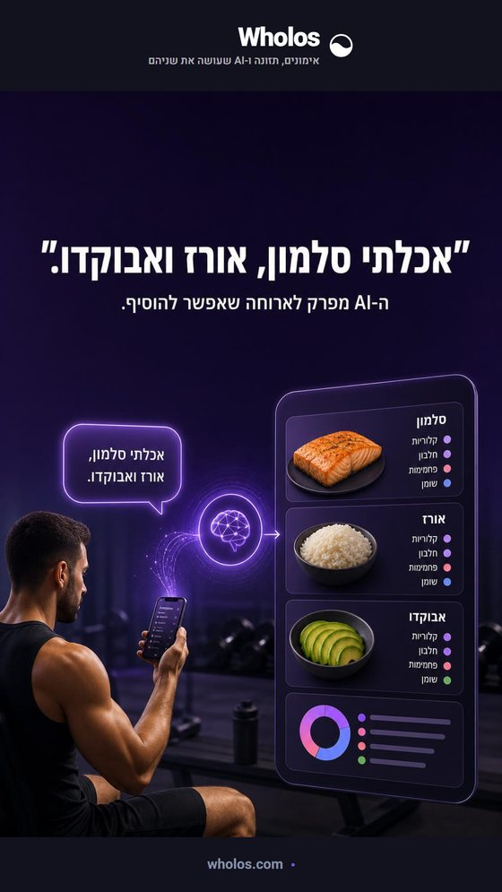
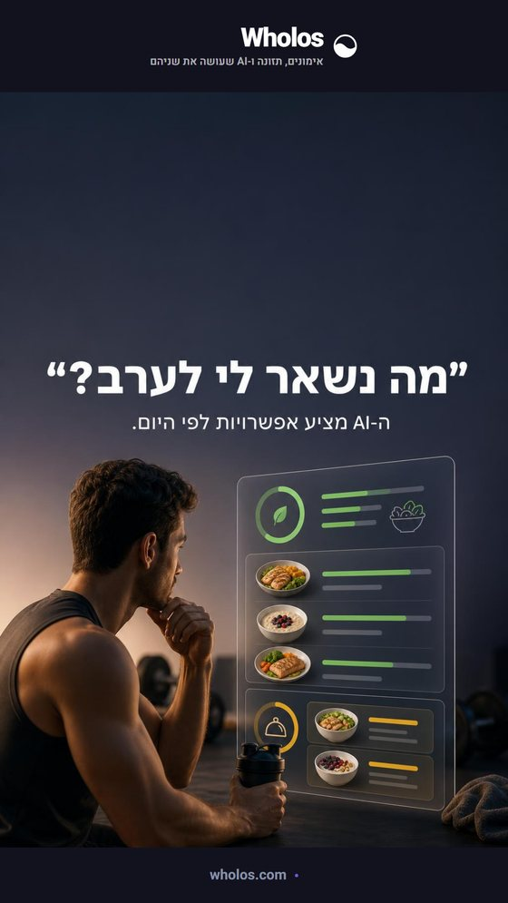
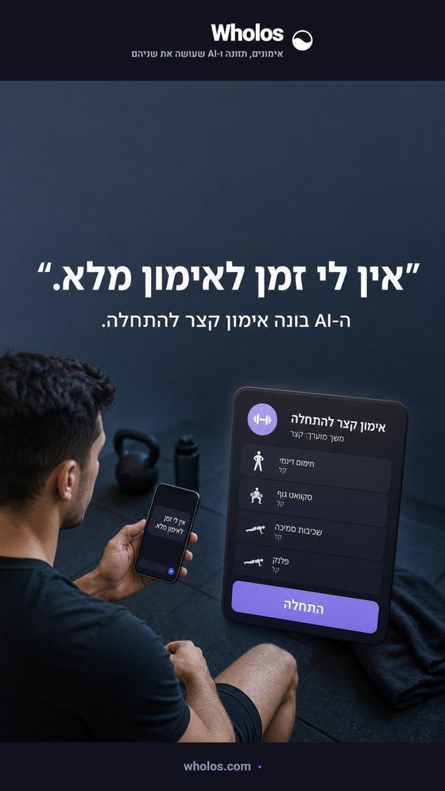
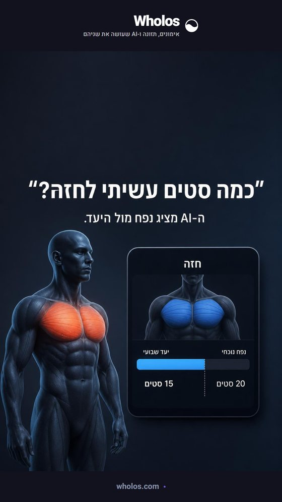
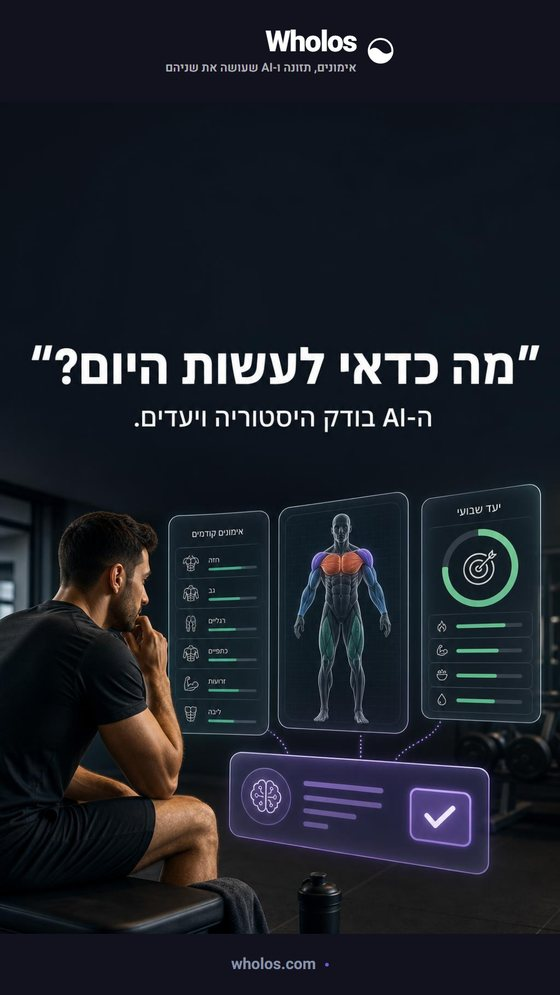
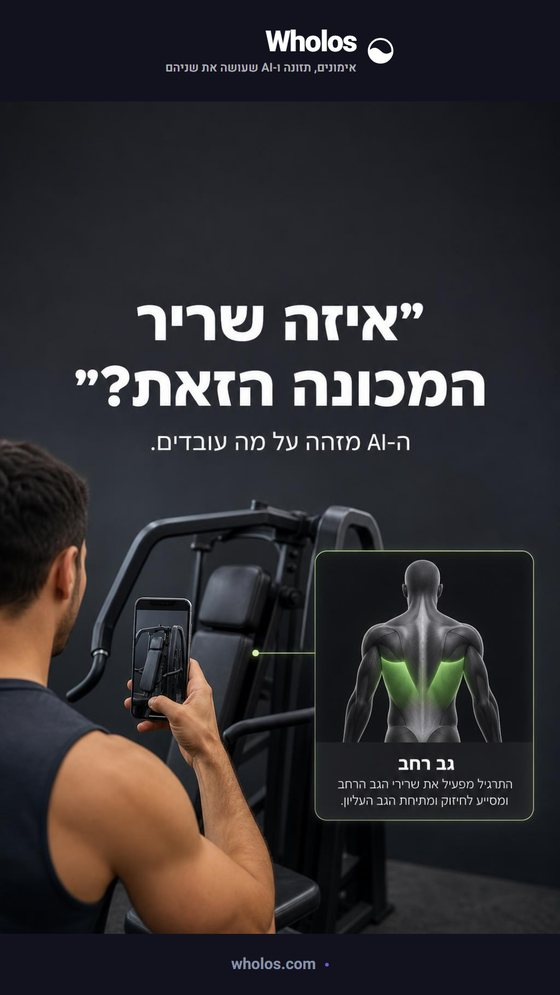

1a01-exercise
״זה תרגיל חדש למאגר.״
ה-AI ממלא שם, שריר וצעדים.
מראה למאמן שהידע מהשטח הופך מיד לתרגיל מסודר.
הפרומפט
מאמן מתאר תרגיל חדש בקול, ולצדו כרטיס תרגיל שנבנה עם שם, שריר וצעדי ביצוע.
עשרה פוסטרים, 1080×1920. התמונה והטיפוגרפיה העברית נוצרו במלואן במודל — אין כאן טקסט מודבק ב-HTML. התבנית היא זו שסומנה כטובה בסבבים הקודמים: משפט אמיתי במרכאות, ומתחתיו מה שה-AI עושה איתו.
מודל תמונה לא משחזר לוגו במדויק — אף פעם. ניסיתי גם את הדרך השנייה,
לשלוח את הסימן כתמונת רפרנס: נקודת הקצה של Leonardo בגרסה 2 דוחה
guidances ברמה העליונה, ומתעלמת בשקט מכל מפתח לא מוכר בתוך
parameters — שלוש צורות שונות החזירו OK, כלומר אף אחת לא
באמת הופעלה. לכן הלוגו מולבש אחרי היצירה, וכך הוא מדויק.

ה-AI ממלא שם, שריר וצעדים.
מראה למאמן שהידע מהשטח הופך מיד לתרגיל מסודר.
מאמן מתאר תרגיל חדש בקול, ולצדו כרטיס תרגיל שנבנה עם שם, שריר וצעדי ביצוע.

ה-AI יוצר הצעה שאפשר לערוך.
ממחיש בניית אימון בפעולה בלי להבטיח שליחה למתאמן.
מאמן פונה ל-AI עם בקשה קצרה, והצעת אימון עם תרגילים וסטים מופיעה ככרטיס מוכן לעריכה.

הדשבורד מציג מה תועד היום.
מבהיר בדיוק מה מאמן יכול לראות בדשבורד.
מאמן מסתכל על רשימת מתאמנים, עם ספירת אימונים וארוחות שנרשמו היום ליד כל שם.

הוא מופיע ברשימת המתאמנים שלך.
מציג את דרך החיבור הפשוטה בין מאמן למתאמן.
קישור הזמנה נשלח למתאמן, ולאחר מכן הוא מופיע ברשימת המתאמנים של המאמן.

ה-AI מפרק לארוחה שאפשר להוסיף.
רגע יומיומי שמדגים רישום תזונה ממשפט חופשי.
מתאמן שולח משפט על ארוחה, וה-AI מציג רכיבי ארוחה עם קלוריות ומאקרו.

ה-AI מציע אפשרויות לפי היום.
מחבר בין השאלה הטבעית לבין הנתונים שכבר נרשמו.
מתאמן שואל על הערב, ולצד השיחה נראים היעד היומי, מה נאכל ומה נשאר.

ה-AI בונה אימון קצר להתחלה.
מראה שה-AI עוזר לעבור מהתלבטות לפעולה.
מתאמן כותב שאין זמן, ומקבל כרטיס אימון קצר עם כפתור התחלה.

ה-AI מציג נפח מול היעד.
מדגים תשובה שמבוססת על היסטוריית האימון האמיתית.
שאלת מתאמן מופיעה ליד מסך גוף שבו חזה מוצג מול היעד השבועי.

ה-AI בודק היסטוריה ויעדים.
ממחיש ליווי לפי מה שכבר קרה ולא צ׳אט כללי.
מתאמן שואל מה לעשות היום, ולצדו נראים אימונים קודמים, שרירים ויעד שבועי לפני הצעת פעולה.

ה-AI מזהה על מה עובדים.
מציג שימוש ממשי בתמונה בתוך שיחת האימון.
מתאמן מצרף תמונה של מכונה, וה-AI מחזיר זיהוי של קבוצת השריר והקשר לתרגיל.